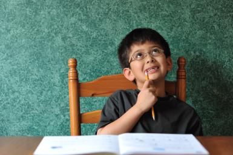

我的大学室友
今天傍晚不知道怎么回事，突然停电了。实在无聊啊，趁着笔记本还有点电，打开电脑翻看以前的东西，这个文件夹打开看看，那个瞅瞅，最后在照片的文件夹里面停留住了。我点开了第一张照片，直到我点下最后一次下一张，终于看完了，关上电脑，我就躺倒床上了。细细回味了一下当时照那些照片的场景，想起来太多的东西，心里突然有一种忧伤失落的感觉。
尤其是看到寝室合影的时候，我的心里更不是滋味了，一共八个人，只有五个来了，为什么会出现这种情况？
首先看看： 说起我们寝室，有太多的故事。大一我的寝室有四个人，半年之后，换了一个室友，由黄变成了尚，又过了半年，寝室一个室友去当兵了，走了晓东，强哥补位进来。大二开始了，过了一年之后，进入大三了，由于学校宿舍不够住了，一个宿舍由住四个人改到住六个人，这样又有两个人加进来了，分别是龙哥和狗铁。没过一个月，龙哥也去当兵了，寝室又变成五个人了，又过了一个月，小智又补位进来，寝室又变成六个人了，就这样过了一年，来到大四了，当年大一去当兵的，有一个回来了，不是晓东，变成阿锋了，由于他的好基友尚在我寝室，于是他就加入我们寝室了，我们的寝室队伍壮大到七人了，这是居住在我们寝室的，还有一个流动的，那就是黄，虽然大一就和尚换了寝室，但是他每天都上我们寝室来，一直一起行动，所以我们大四队伍实际成员有八个人。 而我们八个人，性格各异。
按床位来介绍吧。
第一位 是尚大神，为人大方，自己有的东西，从不吝啬，性格也放的开，有点小社会。玩什么都有模有样，是个聪明之人，生活有乐趣，就是学习方面不上心，还好工作不用愁。
第二位强哥，博学之人，最具人缘的老好人，凡事总是先为他人考虑，不管是谁，只要能帮的都帮，这方面对我影响很大。所以我告诉自己，只要强哥有任何要我帮忙的，我都会毫不犹豫的答应。当然了，强哥偶尔也会让你等的着急。
第三位 给老黄，因为他以前就是睡强哥那个位置的。老黄，一个大帅哥，大学四年帮助了我很多，对我很是照顾，每次过时过节都给我带好吃的，也总是为别人着想，替他人操心，外面总是他买单，有时也花冒了。好像找不到什么缺点，希望以后能够更加潜心专注。
第四位 说说我自己吧，比较安静，有点内向，没事一天到晚就整我爱玩的东西，不爱主动联系他人，总喜欢别人主动找我，有集体活动就参加，没有就继续沉醉在自己的世界里，总之不能让自己闲着什么也不干。偶尔也有点私心，但也知道感恩。只要你帮过我，我肯定我帮你。有时候心有点软，想拒绝别人总是不好意思说出口，所以最后还是会帮的。有事没事可以骚扰我。
第五位 小二波， 一个极具模仿才能的人，首先自我介绍一下‘‘大家好，我叫孟庆一，这是我吃过最好吃的饭，我最喜欢的就是抠脚了’’有时候我觉得我俩性格有点相似，你能说会道，会办事，有些话你总能在一个好的时机说出来，显得那样自然，有毅力，心里能藏住事的人，扣脚是你的专属动作，每次扣脚你都极其认真，偶尔也自嘲，当然有时候你也有点急性子
第六位 小智 说实话，最让我矛盾的一个人。有时候你极具理性的解释，根本无法让我信服，但是我却找不到理由来反驳你，有时候我会觉得你有点自私，但好像也没有什么不对，只是让人看的有点不舒服。有时候，你又有铁骨柔情，记得有一次，你说春节你妈离家去工作，你嚎啕大哭，那一刻我真触动了；在我走的那一天早上，你和我道别，说着说着就哭了，把寝室里的其他人都哭醒了，他们却困惑的不知道发生什么事了，性情中人，我也跟着哭了，你用纸擦完眼泪，咋两拥抱告别之后，我自己独自看着窗外，想着想着，眼泪持续了一个多小时方止，对于这一天发生的事情，我真的没有想到，但我很感动，我会记得的。
第七位 铁铮 细长的腿，瘦弱的身板，和我一样非常瘦，在大家的眼里，似乎你无忧无虑，非常开心，每次重修补考，大家都为你着急，为你想办法。所幸的是你最终全部补考过了，按时取得毕业证，学位证。聚餐时，大神说未来最担心的是你，随着你顺利毕业了，我不这么认为。你很聪明，你从来就只差痛下决心干某一件事，大学期间，我看的出来，你心里是有想法的，只是你无法下定决心，因为当时你所处于的形式。前两天和你聊天，得知你要考研，且不论如何，但是我为你下定决心干一件事情而高兴，我期待收到你的喜讯。
第八位 阿锋 大一时，与你并不熟悉，第一次去教室的路上，你在雨中走着，我撑着伞走到你的身边和你共伞去到教室。那一次我发现你也是一个不爱言语，有点特立独行的人，仅此而已，其实我挺羡慕你这样的人，有着自己的爱好，每天乐此不疲的学唱歌，陶醉其中。毕业前你经常说的一句话我记得特别深，大不了一死，你在部队所受的经历磨难，肯定是难以想象的。所以才会有像你这样身体素质的人，都得有‘’大不了一死‘’的觉悟才能坚持下来。剩下的日子里，希望你能过的更加充实。
第九位 晓东 到寝室的第一天，看到你的第一眼，我和我爸惊呆了，你是学生？太吓人了，那么大的块头，一年时间的生活接触，大家发现了，你是徒有其表，身体太虚了，根本没有什么力气，一笑全露馅了，一下就看出你的实际心里年龄。你的脖子特别细，大家都爱捏你的细脖子，捏你的脸，而你只是一笑而过。你很爱笑，笑的也特别灿烂。如今你在军校继续读书，一名光荣的军人，
第十位 龙哥 一身放荡不羁爱自由是你的标签，朋友的酒，一首你最喜欢的歌。平时和你接触的比较少，更多的是听强哥讲你的故事，在你蒙古汉子粗犷的外表下面，是一颗有点文艺的心，我还记得看过你的一本《穆斯林的葬礼》。走到你的桌子旁边摆着一长排的阿萨姆奶茶空瓶子，晚上没事就着花生米，喝着小酒，甚是惬意，全身透露着大蒙古汉子的豪爽与随性。